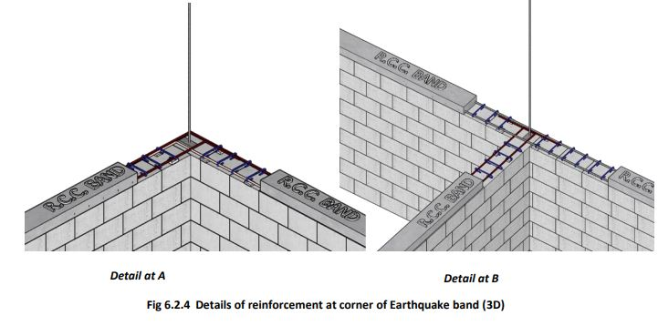
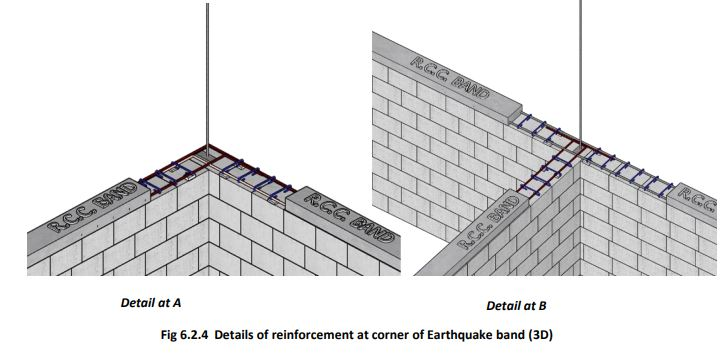
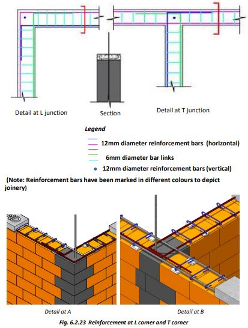
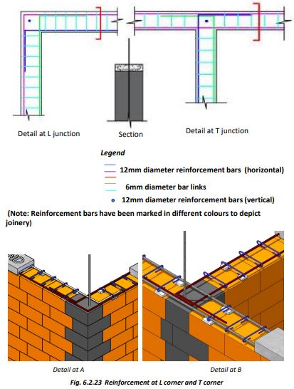

Construction of Plinth Band
The plinth is constructed at least 30 cm above ground level. A higher plinth level is recommended to prevent rainwater, snakes, and floodwater from entering the building.
Providing RCC Plinth Band:
1. Install Formwork: Set up formwork along the edges of the plinth masonry using timber, plywood, or metal sheets to shape the plinth band. Secure the alignment.
2. Place Reinforcement Bars: Place horizontal reinforcement bars according to the design, allowing vertical seismic bars at corners to pass through the horizontal bars.
3. Pour Concrete: Use an M20 concrete mix to fill the formwork, compacting it thoroughly to remove air voids.
4. Cure and Finish: Allow the concrete to cure for 28 days, keeping it moist to prevent cracking. After curing, remove the formwork and finish the surface as needed.
Details of Making RCC Bands
 

● A continuous 75 mm thick RCC plinth band is provided over all walls at plinth level to improve earthquake resistance and prevent non-uniform foundation settlement.
● Reinforce plinth bands with at least two 12mm diameter steel bars that bend at wall corners to extend into adjoining walls. Do not terminate steel bars at wall corners or T-junctions.
Tips to Remember:
1. Foundation and Soil: Level the ground, compact the soil, and ensure drainage to prevent settlement and water accumulation.
2. Material Quality: Use high-quality concrete (M20+), bricks, or stones, with steel reinforcement for durability.
3. Dimensions and Alignment: Follow specifications for uniformity, and ensure accurate measurements and level alignment.
Step 4: Construction of Earthquake Band
● Do not terminate RCC band bars at corners; instead, bend them 60 cm into adjacent walls.
● Use 12mm main bars, 6mm links, and 12mm vertical bars at each corner and T-junction from foundation to roof.
● Construct RCC bands at 75mm thickness with a mix of 1 part cement, 1.5 parts sand, and 3 parts 10mm aggregate.
● Place the earthquake band continuously across all walls at plinth level.
● Allow at least 36 hours of curing before beginning masonry on the plinth band.
● Additional RCC bands should be constructed at sill, lintel, roof, and gable levels.
 

Step 5: Process to Be Adopted
● After casting the RCC Plinth Band, begin masonry in the superstructure a day later.
● In cold climates, use thick walls for insulation (e.g., 300 mm thick rammed earth walls or sun-dried mud block walls).
● To improve strength and durability, construct the house with sun-dried mud blocks confined within RCC bands and reinforced with steel bars at corners.
● Plaster external wall surfaces with Ferrocement to reduce maintenance.
● Painted Ferrocement plaster offers durability similar to traditional cement plastered surfaces.